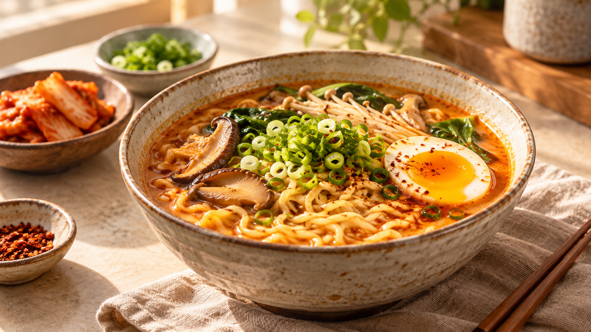

한 그릇에 담은 깊은 풍미, 온담 한그릇 라면

- 가상 브랜드의 예시 제품
- 제철 채소와 함께 즐기는 한 끼
- 상품 판매 및 주문 기능은 제공하지 않습니다.
식탁에 담은 마음
식탁에 자주 오르는 맛일수록 재료부터 조리의 순간까지 더 세심하게 생각합니다. 정성 담은 온담면은 온담이 제안하는 편안한 한 끼입니다.
맛있는 한 끼의 제안
함께 먹는 사람과 계절에 맞는 채소를 더해 나만의 한 접시로 즐겨보세요. 보관 및 조리는 실제 구매한 제품의 표시사항을 확인해 주세요.